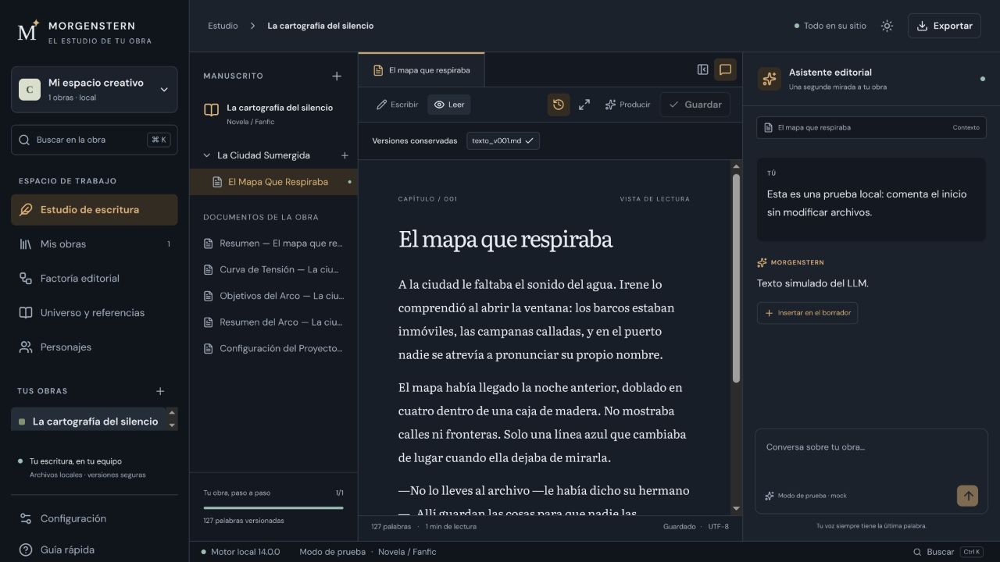
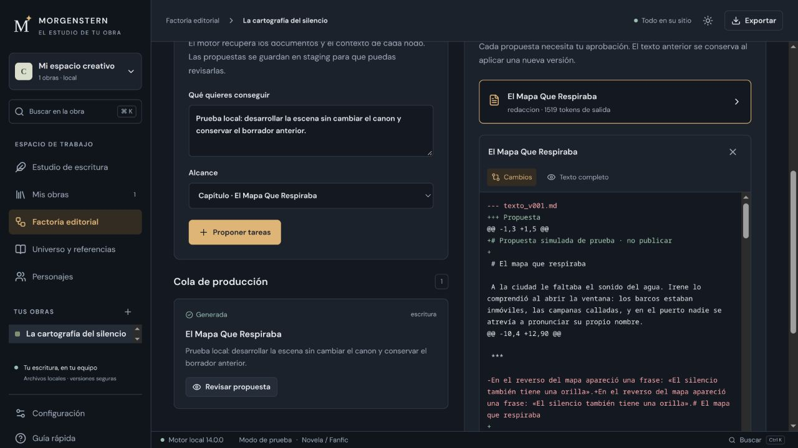

Morgenstern / el estudio de tu obra
Beta en preparación · próximamente
Tu obra, con espacio para escribir y decidir.
Manuscrito, estructura, versiones y asistente editorial en una interfaz oscura por defecto. Una factoría para coordinar la producción sin perder el control de lo que llega al texto.
Estoy preparando una beta que pondré a disposición próximamente. Todavía no hay fecha ni descarga pública.
React · Tauri 2 · Rust · Python
Escribir, leer y conversar con la obra
La estructura a la izquierda, el manuscrito en el centro y el asistente contextual a la derecha. Editor Markdown, vista de lectura y versiones conservadas para volver sobre tus decisiones.

Producir con revisión editorial
Define un objetivo, aprueba las tareas y revisa la propuesta. Los diffs hacen visibles los cambios antes de incorporarlos como una nueva versión del manuscrito.

Una obra organizada
Estructuras según el tipo de obra, referencias, personajes y contexto editorial. La exportación EPUB se integra en el estudio; audio y vídeo siguen disponibles en el motor.
Responsabilidades claras
React y Tauri 2 para el escritorio. Python para agentes y servicios editoriales. Rust para hashes paralelos y supervisión de FFmpeg con límites y timeouts.
Recorrido de uso · Arquitectura · Comprobaciones y próximos pasos
Muestra pública ejecutable
Generar no es entregar.
El showcase conserva su demostración de EPUB/audio y su puerta de calidad multimedia. Esta pieza pública es independiente de la futura beta del escritorio.
Una entrega pequeña e inspeccionable
Un capítulo escrito para esta muestra. ZIP determinista, navegación y metadatos inspeccionables.
Reproducir la entrega
python3 -m unittest discover -s test -v python3 samples/delivery_demo.py python3 samples/media_gate.py build/public-demo/tone.wav --minimum 0.9
Python 3.11+ y FFmpeg/ffprobe. Biblioteca estándar, sin paquetes Python. En Windows puedes usar py -3.
Validación estructural acotada del EPUB. No equivale a una certificación EPUBCheck ni a verificar toda la producción editorial.